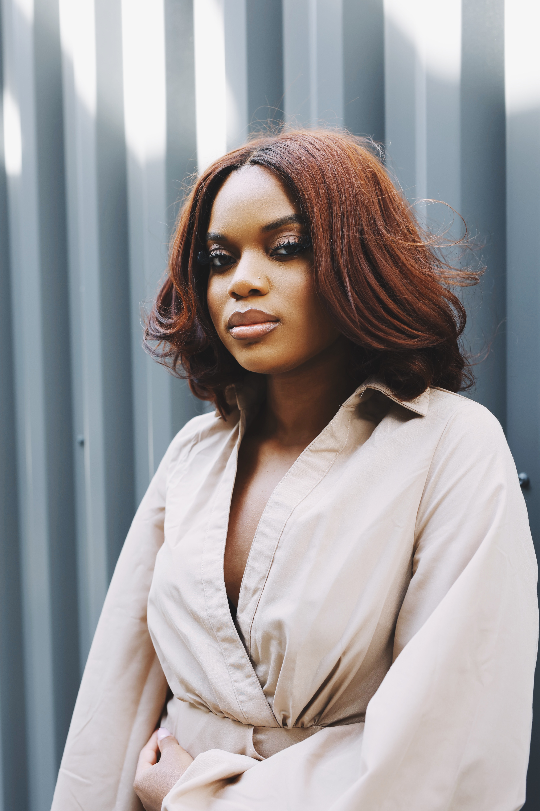

Aspiring HR Professional, People advocate, and Fashion Enthusiast!
After starting her first role out of college, Olivia transitioned into international Business. The new industry highligted the need for diversified opporuntities for early in career professionals of color.
Olivia has traveled to 8 countires in the past 2 years. She aspires to go to 30 countries before she turns 30 years old.
She traveled out the country for the first time to Asia as a solo traveler.
Olivia is interested in working in interior design as a side hobby.
Olivia wants to go into a career as an HR Professional focusing on early in career professionals!
Contribute to educating minority communities on financial education and independence.
Owning her own clothing line.